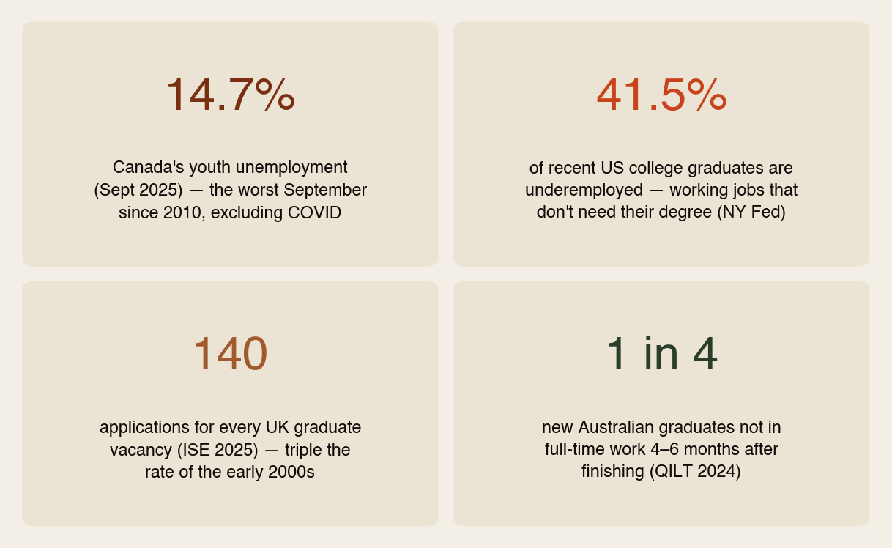
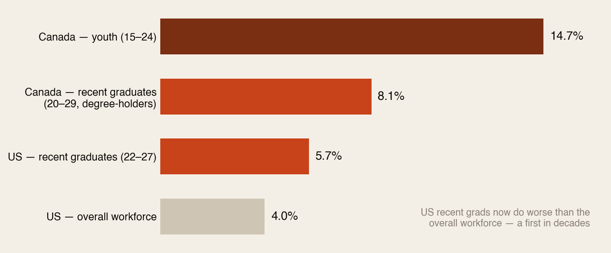
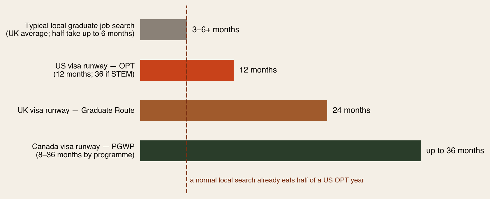
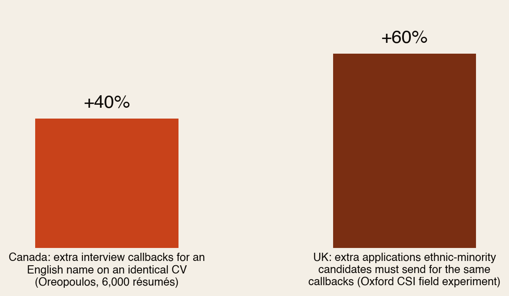

The other side of the bet.
Our Degrees of Debt report showed what Africans pay to study abroad. This one flips the lens: in the countries they study in — Canada, the US, the UK, Australia — how are the locals doing? Because that’s the market every African graduate has to win, with a visa clock running and a foreign name on the CV.
Section 01The Short Version
Before an African family bets $100,000 on a foreign degree, one question should be asked that almost never is: how are the young people who already live there doing in that job market? The answer, right now:
- Canada: youth unemployment hit 14.7% — the worst September since 2010 outside COVID. Even local degree-holders aged 20–29 sit at 8.1%.
- United States: recent graduates (5.7%) now do worse than the overall workforce (4.0%) — a first in decades — and 41.5% are underemployed, working jobs that don’t need their degree.
- United Kingdom: employers receive 140 applications per graduate vacancy; graduate hiring just fell 8%.
- Australia: 1 in 4 new graduates isn’t in full-time work 4–6 months after finishing.
- The name gap: identical CVs get 40% more callbacks in Canada with an English name; UK minority applicants need 60% more applications for the same result.
The locals are struggling in their own job market — with no visa clock, no sponsorship problem, and no name penalty. That is the game an African graduate enters. Not unwinnable — but it must be played knowing the score.
Section 02How the Locals Are Doing

This is not a normal moment. Canada’s youth joblessness is up 57% in three years — 437,000 young Canadians looking for work and not finding it. The UK had roughly 1.2 million recent graduates competing in a market where top employers posted about 17,000 graduate-scheme roles. Entry-level work — the exact rung international graduates need — is the rung being squeezed hardest, partly by hiring freezes, partly by AI absorbing junior tasks.
None of this means the countries are “bad” destinations. It means the brochure is out of date.
Section 03The Graduate Squeeze, Measured

Read the US bars twice: for decades, a degree meant you did better than the average worker. Right now, American recent graduates do worse — and two in five of the employed ones are in jobs that never required the degree. In Canada, a local citizen with a bachelor’s and no visa issues still faces 8.1% unemployment in their first working decade.
That’s your competition — and your benchmark. An international graduate isn’t trying to beat the market average. They’re trying to beat locals who are themselves having their hardest run in fifteen years.
Section 04The Search vs the Clock
How long does it actually take a local graduate to land a job? UK data puts the average search at ~3.8 months, with half of graduates taking up to 6 months — and that’s with citizenship, local references and a lifetime network. Australia’s own survey measures outcomes at 4–6 months precisely because that’s how long settling takes.

Now run the maths for your Canada example. A Canadian graduate taking 4–6 months to find work is normal. An African graduate on a PGWP has 8–36 months of runway — but needs not just any job: for permanent residency, it usually has to be a skilled job, quickly enough to bank qualifying work experience before the permit ends. The same “normal” search that a local shrugs off consumes the margin an international graduate cannot spare — and in the US, a routine six-month search eats half the entire OPT year.
Section 05The Name on the CV
The visa clock is the visible handicap. The measured one is quieter:

These are randomised field experiments — identical qualifications, different names. In Toronto, “John Martin” got 40% more interview calls than the same CV under a foreign name. In the UK, applicants with African and other minority names needed 60% more applications for the same callbacks — a gap researchers found essentially unchanged for half a century.
Fold that into the UK’s 140-applications-per-vacancy market: if the average candidate needs 140 attempts, the candidate with a Nigerian name effectively needs ~220. The market is hard for everyone; it is arithmetically harder for us. Better to know the number than to internalise the rejections as personal failure.
Section 06What This Means for the Bet
- The host market is a variable, not a constant. Degrees of Debt showed the bet depends on conversion. This report shows conversion depends on a job market that is currently the hardest for young people in over a decade — in every major Anglo destination at once.
- “Locals struggle” cuts both ways. High local youth unemployment also fuels the politics that caps study permits and tightens graduate routes. The market and the visa rules deteriorate together — that’s why doors keep narrowing right when graduates need them.
- Germany is the quiet exception. Lower graduate unemployment, documented skill shortages, an 18-month job-seeker visa — and a third of the Anglo price. The pattern from Degrees of Debt repeats: the best-marketed destinations are not the best-odds destinations.
- The bet still pays — for the prepared. 86% of Nigerians on the UK Graduate Route found work. The winners aren’t luckier; they started earlier and played the actual game, not the brochure’s.
Section 07The Playbook: Beating a Market the Locals Find Hard
- Start the job hunt in first year, not final year. If locals take 6 months, budget 9–12 — which means internships, co-ops and referees must be built long before graduation.
- Choose programmes with work built in. Canadian co-op degrees, German Werkstudent jobs, UK placement years — these convert “no local experience” into a local track record before the clock even starts.
- Target the shortage lists. Every destination publishes in-demand occupation lists (they drive visas too). A mid-prestige degree aimed at a shortage occupation beats a famous degree aimed at a saturated one.
- Expect the 140 — and route around it. Mass applications are the losing game the locals are already losing. Referrals, professional associations, professors’ networks and alumni bypass the pile entirely — and they’re where the name penalty matters least.
- Bank the qualifying experience fast. In Canada especially, the PGWP is the bridge to permanent residency only if the work is skilled and starts early. A survival job that outlasts the runway is the trap.
- Know the number, keep the confidence. 140 applications and a +60% name penalty means rejection is the statistical default, not a verdict on you. The families back home should know this too — before the calls asking why there’s no job yet.
The locals get to treat a six-month search as bad luck. You have to treat it as a plan. That’s the whole difference — and it’s plannable.
Section 08How We Checked
- Verified: Canada youth unemployment 14.7% (Sept 2025) and recent-graduate rate 8.1% (Statistics Canada); +57% youth joblessness in three years / 437,000 unemployed youth (StatCan via The Hub); US recent-graduate unemployment ~5.7% vs ~4.0% workforce and 41.5% underemployment (NY Fed College Labor Market, 2025–26); 140 applications per UK graduate vacancy and −8% graduate hiring (ISE 2025); ~1.2m UK graduates vs ~17,000 graduate-scheme roles (Fortune/ISE); Australian undergraduate full-time employment 75.4% at 4–6 months (QILT GOS 2024); UK average search ~3.8 months, half of graduates up to 6 months (StandOut CV survey; Robert Walters); Canada callback study +40% for English names (Oreopoulos, 6,000 résumés, J-PAL); UK +60% applications for minority names, unchanged ~50 years (Oxford CSI/Nuffield field experiment).
- Visa runways (rules as of 2025–26, subject to change): US OPT 12 months (36 STEM); UK Graduate Route 24 months; Canada PGWP 8–36 months by programme length.
- Honest limits: national statistics define “youth” and “recent graduate” differently — compare within countries, not across; the “~220 applications” line is our arithmetic combining two verified figures, labelled as illustration; time-to-job surveys are industry surveys, not official statistics.
Sources: Statistics Canada; Federal Reserve Bank of New York; Institute of Student Employers (ISE); QILT Graduate Outcomes Survey; Oreopoulos via J-PAL/UBC; Oxford Centre for Social Investigation via Nuffield College & British Sociological Association; Prospects/Robert Walters/StandOut CV; Fortune. Companion report: Degrees of Debt. Full detail in the PDF edition.
The diaspora helps the diaspora.
Africa Global Forum is a peer network for Africans abroad — help each other, sit together, and bounce ideas. The research above is part of an open library. The Forum itself is by application.